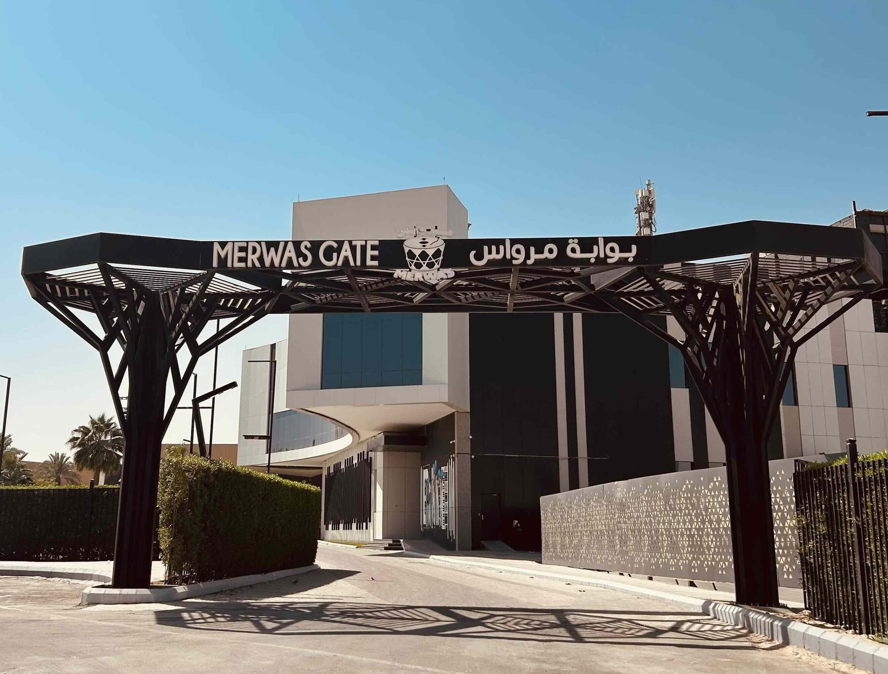
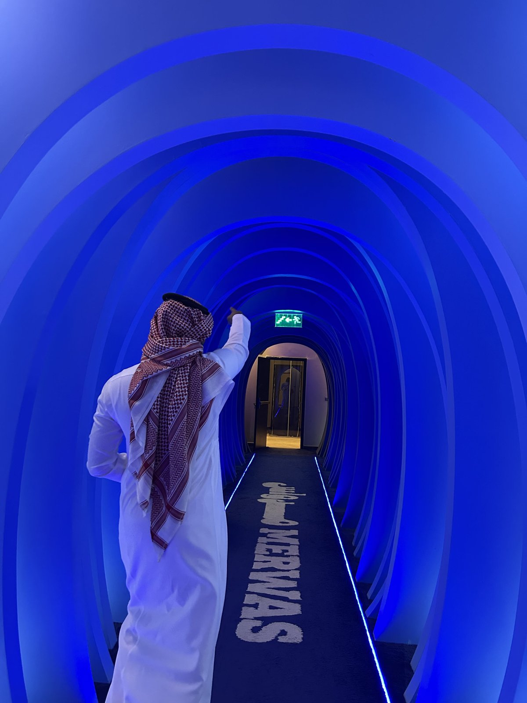
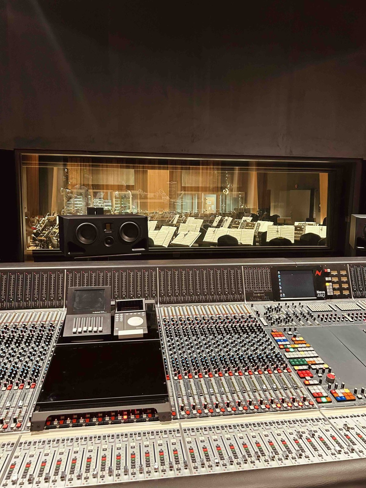
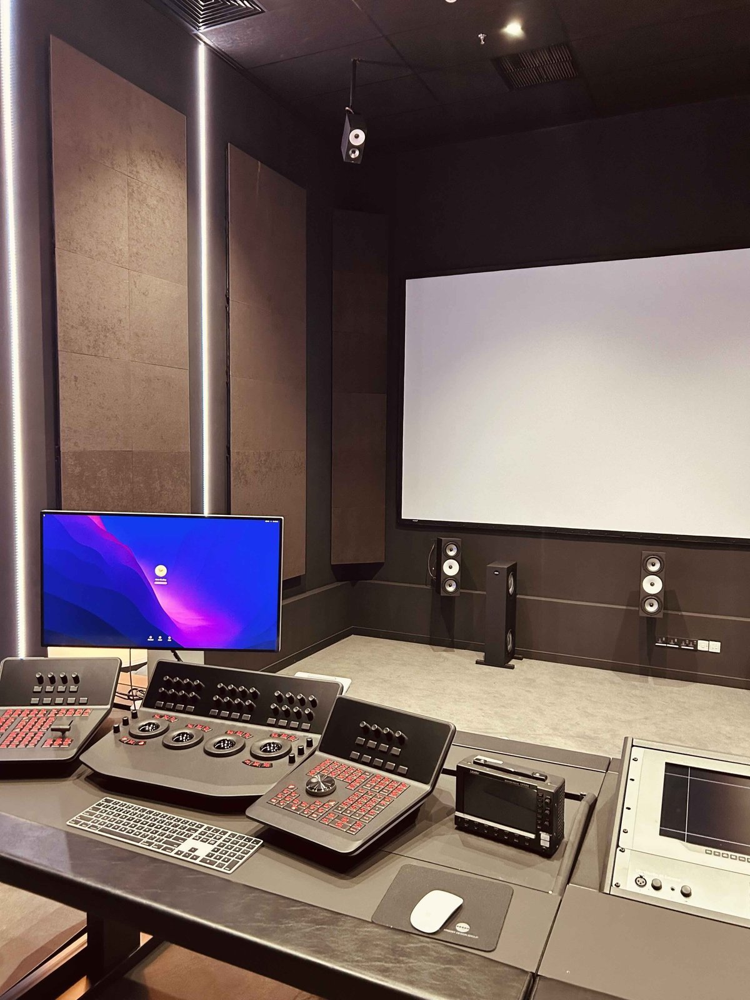
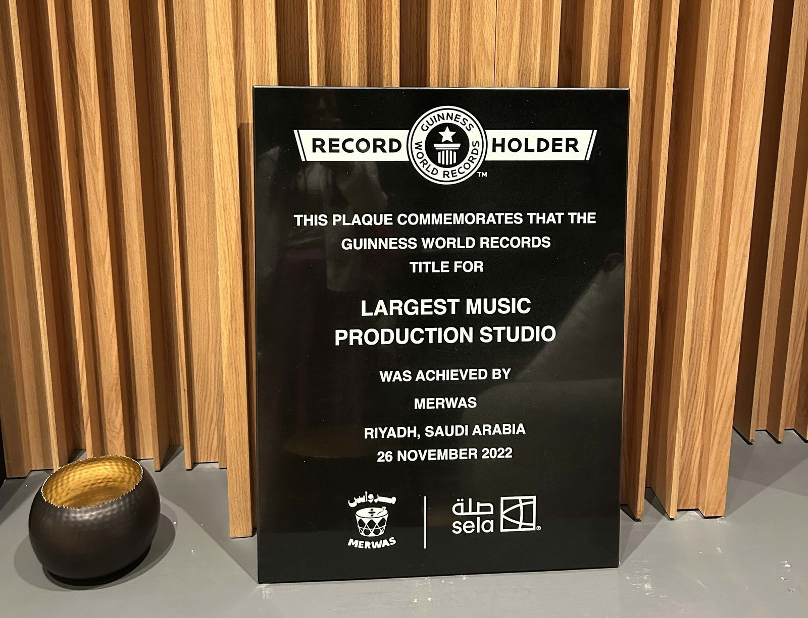
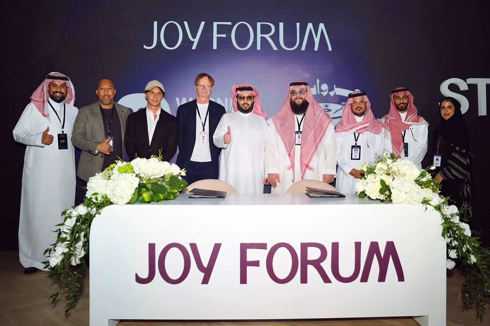
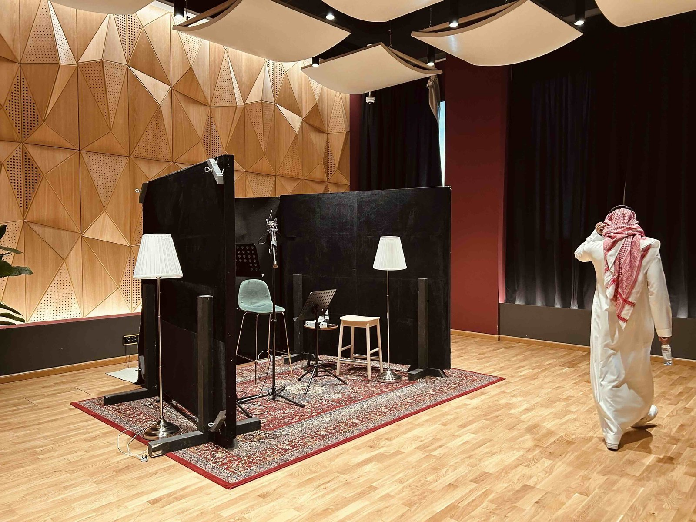
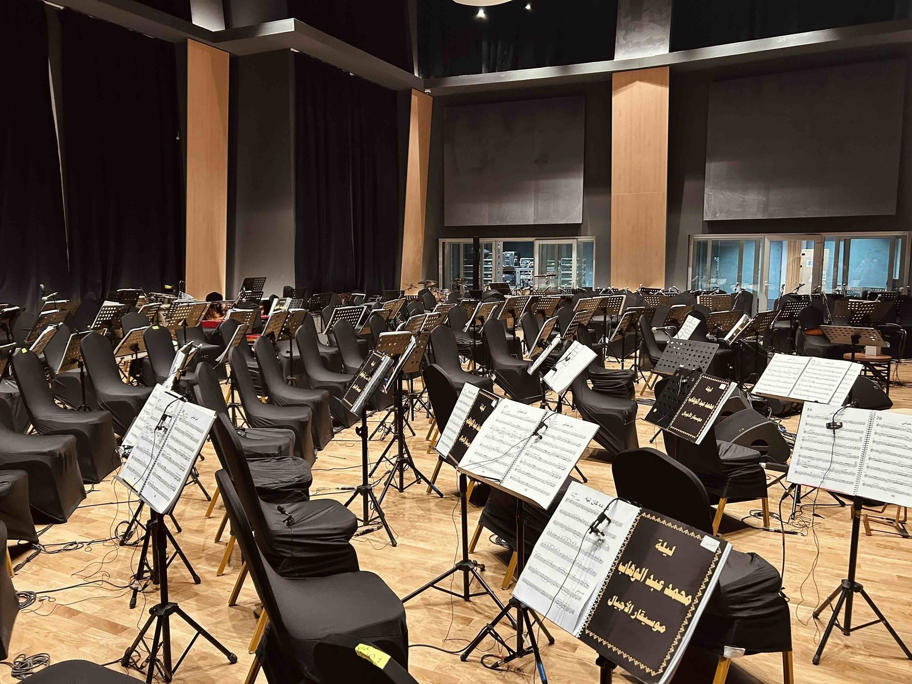

사우디 국부 펀드가 지원한 초대형 음악 창작 인프라의 탄생
사우디아라비아 리야드의 핵심 엔터테인먼트 '불러바드 시티(Boulevard City)' 한가운데에는 거대한 복합 뮤직·콘텐츠 스튜디오 단지 메르와스(Merwas)가 자리하고 있다. 메르와스는 '엔터테인먼트 팩토리'를 표방하며 설립된 통합 음악 제작 공간이다. 창립자 나다 알 투와이지리(Nada Al Tuwaijri)와 루마이얀 알 루마이얀(Rumayyan Al-Rumayyan)의 아이디어에서 출발해, 사우디 국부 펀드(PIF)의 문화·예술 지원 정책과 '비전 2030' 전략에 힘입어 2022년 10월 공식 오픈했다. 음악·예술·엔터테인먼트 전문가들이 모여 있는 이 공간은 다양한 스튜디오뿐 아니라 교육·제작 생태계를 결합하여 사우디 창작자들을 지원하고 있으며, 지식 재산권 보호와 지속 가능한 창작 생태계 구축을 핵심 가치로 삼고 있다.

▲ 메르와스 스튜디오 단지 입구 전경 — 출처: 통신원 촬영

▲ 음악적 사운드를 모티프로 한 인테리어 디자인 — 출처: 통신원 촬영
전체 규모는 4,023.83㎡로, 2022년 11월 26일 기네스 세계 기록에서 '세계에서 가장 큰 음악 제작 스튜디오(Largest Music Production Studio)'로 공식 인증을 받았다. 22개의 리코딩 룸과 라이브 룸, 포스트 프로덕션 시설, 마스터링 룸, 전자음악 전용 EMP Suite, 리허설 룸, 팟캐스트·라디오 부스, 그린 스크린 및 컬러 그레이딩까지 음악·영상 제작의 전 공정을 한 시설 안에서 소화할 수 있다는 점이 특징이다. 메르와스는 중동·북아프리카(MENA) 지역 음악·콘텐츠 산업의 새로운 허브 구축을 목표로 한 국가적 계획의 상징적인 결과물이다.


▲ (좌) 녹음 스튜디오, (우) 콘텐츠 시사실 내부 — 출처: 통신원 촬영

▲ 세계 최대 음악 제작 스튜디오 기네스 인증 플라크 — 출처: 통신원 촬영
세계 음악 시장이 주목한 워너뮤직–메르와스 파트너십
이 초대형 스튜디오가 국제 음악 시장의 관심을 끌게 된 배경에는, 2025년 10월 발표된 워너뮤직 그룹(Warner Music Group, WMG)과의 전략적 파트너십이 있다. 워너뮤직은 리야드 기반의 멀티미디어·콘텐츠 제작사 메르와스와 손잡고, 현지에 새로운 레코드 레이블을 설립하는 합의를 체결했다. 이번 협업은 단순한 제휴를 넘어, MENA 지역 아티스트들의 음악을 글로벌 시장으로 확장시키기 위한 본격적인 공동 벤처로 설명된다. 워너뮤직과 메르와스는 중동·북아프리카 지역의 슈퍼스타는 물론 떠오르는 신예 아티스트까지 공동으로 발굴·계약하고, 메르와스가 보유한 첨단 제작 인프라를 활용해 이들의 음악을 지역과 세계에 연결하겠다는 구상을 내놓고 있다.

▲ 워너뮤직-메르와스 파트너십 협약 — 출처: 워너뮤직 그룹(Warner Music Group)
워너뮤직 MENA 담당 총괄 역시 이 지역을 '세계 음악 산업에서 가장 빠르게 성장하는 시장 중 하나'라고 언급하며, 메르와스와 함께 지역 음악을 글로벌 플랫폼으로 확장시키겠다는 의지를 밝혔다. 메르와스 측 또한 중동 음악의 국제적 확장을 가속화할 파트너로 워너뮤직을 지목하며 강한 기대감을 드러냈다. 이 같은 글로벌 레이블과의 파트너십은 메르와스가 단순히 '세계 최대 규모'를 자랑하는 인프라를 넘어, 국제 음악 산업 구조 속에서 핵심적인 창작 허브로 자리 잡아가고 있음을 보여준다.
케이팝에 높은 관심을 보이는 메르와스의 글로벌 확장 전략
메르와스의 초청을 받은 통신원은 직접 단지를 둘러보며 관계자들과 대화를 나누는 시간을 가졌다. 외형적인 규모나 최첨단 장비만큼 인상 깊었던 것은 메르와스가 '교육'과 '글로벌 협업'을 동시에 지향하는 기관이라는 점이었다. 메르와스는 단순 스튜디오를 넘어 '아카데미' 기능을 결합하고 있다. 작곡, 미디(MIDI) 기반 음악 제작, 리코딩·믹싱·마스터링을 다루는 실기 중심의 클래스가 운영되고 있으며, 젊은 창작자를 발굴하는 레지던스 프로그램도 구축되어 있었다. 또한 아티스트 쇼케이스 등 대면 네트워킹 프로그램을 통해 창작자와 산업 관계자 간의 교류를 촉진하며, 창작 생태계의 연결점을 넓히는 역할도 수행하고 있다.


▲ (좌) 보컬 부스, (우) 오케스트라 리코딩 스튜디오 — 출처: 통신원 촬영
특히 흥미로웠던 점은 메르와스가 케이팝에 높은 관심을 보이고 있었다는 사실이다. 인터뷰 중 한국식 보컬·연기 교육, 뮤지컬 트레이닝, 한국 드라마·영화 OST 중심의 단기 과정 등 한국의 콘텐츠 교육 모델에 대한 다수의 질문이 이어졌으며, 이를 자사 아카데미 프로그램에 어떻게 접목할 수 있을지 함께 아이디어를 나누기도 했다. 한국 작곡가·프로듀서와의 단기 협업, 보컬 디렉팅 및 미디 작곡 워크숍, 뮤지컬 넘버 제작 과정 등 보다 구체적인 공동 프로그램에 대한 관심도 높았다. 관계자들은 특히 젊은 세대에서 나타나는 케이팝 선호도와 영향력을 직접 체감하고 있으며, 이를 기반으로 한 교류 확대 가능성을 긍정적으로 평가했다. 메르와스는 한국 대중가요를 단순히 '수입 콘텐츠'로 소비하는 데 그치지 않고 함께 교육하고 공동 제작할 수 있는 파트너로 바라보고 있었다.
미래의 MENA-글로벌 음악 허브로 향하는 메르와스
'세계 최대 뮤직 스튜디오'라는 상징성을 지닌 메르와스는 로컬 아티스트를 육성하는 교육기관이자 글로벌 레이블과 창작자들이 만나는 플랫폼으로 자리매김했으며, 케이팝을 포함한 다양한 문화권의 음악이 교차하는 새로운 접점으로도 확장될 가능성을 보여준다. 이번 탐방에서 확인한 메르와스는 사우디 음악 산업의 현재와 향후 전략을 가장 잘 보여주는 공간이었으며, 동시에 MENA 지역 음악·콘텐츠가 세계 시장과 어떻게 접속해 갈지를 가늠하게 하는 유의미한 관찰 지점이었다.
사진출처 및 참고자료
통신원 촬영
메르와스 공식 웹사이트, https://merwas.sa
사우디 엔터테인먼트청, https://www.gea.gov.sa/en/merwas
기네스 기록 공식 웹사이트, https://buly.kr/EduPRmp
《Music Business Worldwide》(2025. 10. 20). IN LATEST MENA MOVE, WARNER MUSIC STRIKES PARTNERSHIP WITH RIYADH-BASED MERWAS TO FORM NEW LABEL